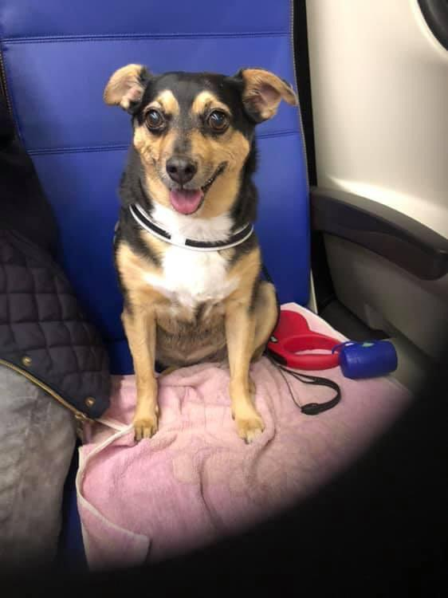
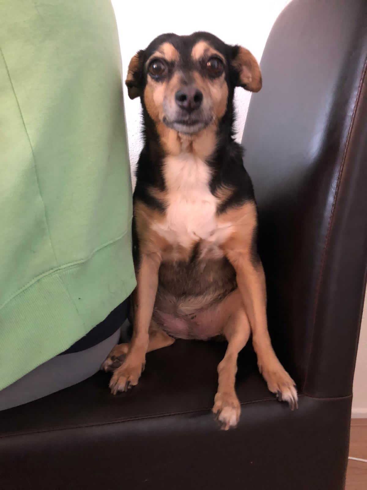

Honden worden al duizenden jaren gebruikt door de mens. Vroeger om te jagen, maar nu meer als gezelschap. Ze worden ongeveer 10 tot 13 jaar oud, maar het verschilt heer erg tussen rassen. Honden zijn ook carnivoren en eten dus vlees, dit komt doordat ze niet kunnen kauwen. Honden kunnen heel goed horen en hij kan hogere frequenties waarnemen dan de mens. Vroeger dachten mensen dat honden geen kleuren konden zien, maar dat is niet waar. Honden kunnen wel kleuren zien, maar anders dan de mens. Het ruiken is bij honden veel beter ontwikkeld dan bij de mens. Honden weten bijvoorbeeld waar de geur vandaan komt.
We hebben Luna gekregen samen met de hond Snoopy in 2009. Beide honden bleven een tijdje bij ons, maar Snoopy werd weggestuurd naar een andere familie. We hebben Luna gehouden en ze woont nu bij mijn oma. Toen Luna naar ons kwam werd ze gelijk vrienden met Chiko, ze hielden heel erg van elkaar. Luna is een hond die erg bang is. Elk geluid of actie maakt haar bang. Ze wilt nooit van mijn oma weg en als ze geaait wil worden vraagt ze dat door je te krabben. Luna was heel verdrietig na dat Cziko weg was, omdat ze niet zonder hem kon. Gelukkig is ze er met moeite overheen en leeft ze weer een normaal leven.